Next: ErNiBC - single ion Up: McPhase USERS MANUAL Previous: Module brillouin - an Contents Index
The crystal field ground state of the 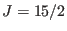 Dy ion in DyNi
ion in DyNi B
B C
can be described by a quasi-quartet consisting of two doublets separated
by a energy interval .
C
can be described by a quasi-quartet consisting of two doublets separated
by a energy interval .
In order to calculate efficiently the single ion property (for small effective magnetic fields in comparison to the total CF splitting) the Hamiltonian 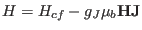 is projected to the quasi quartet and may be written as
with the angular momentum operators given by the 4x4 matrices
| 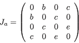 | (158) |
| 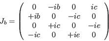 | (159) |
| 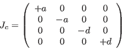 | (160) |
The constants  -
- can be computed from the crystal field parameters, if
these are known. On the other hand, they are connected to the saturation
magnetic moments by the following equations ( denotes the
maximum of the argument values)
can be computed from the crystal field parameters, if
these are known. On the other hand, they are connected to the saturation
magnetic moments by the following equations ( denotes the
maximum of the argument values)
| 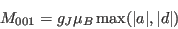 | (161) |
| 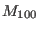 | 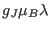 | (162) | |
| 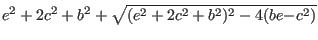 | (163) |
| 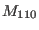 | (164) | ||
| 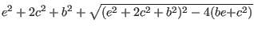 | (165) |
The module given in /examples/dyni2b2c/1ion_mod/quartett.c diagonalises the Hamiltonian (166) and calculates the thermal expectation value 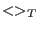 of the vector ,which is returned to the McPhas program.